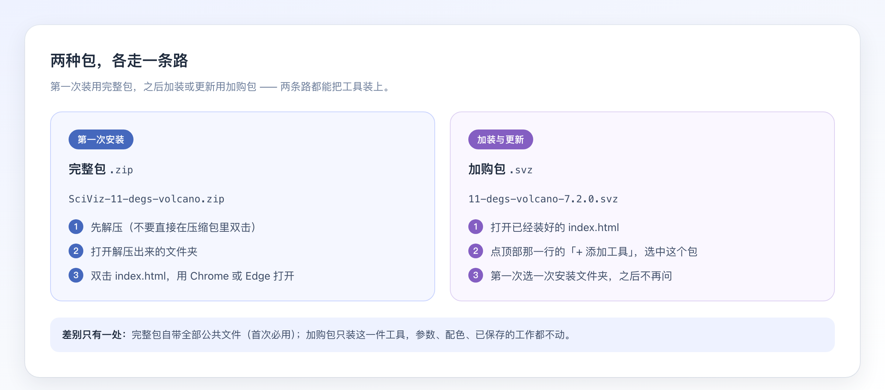
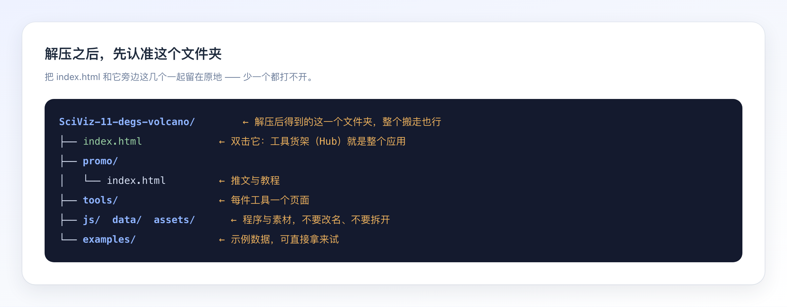
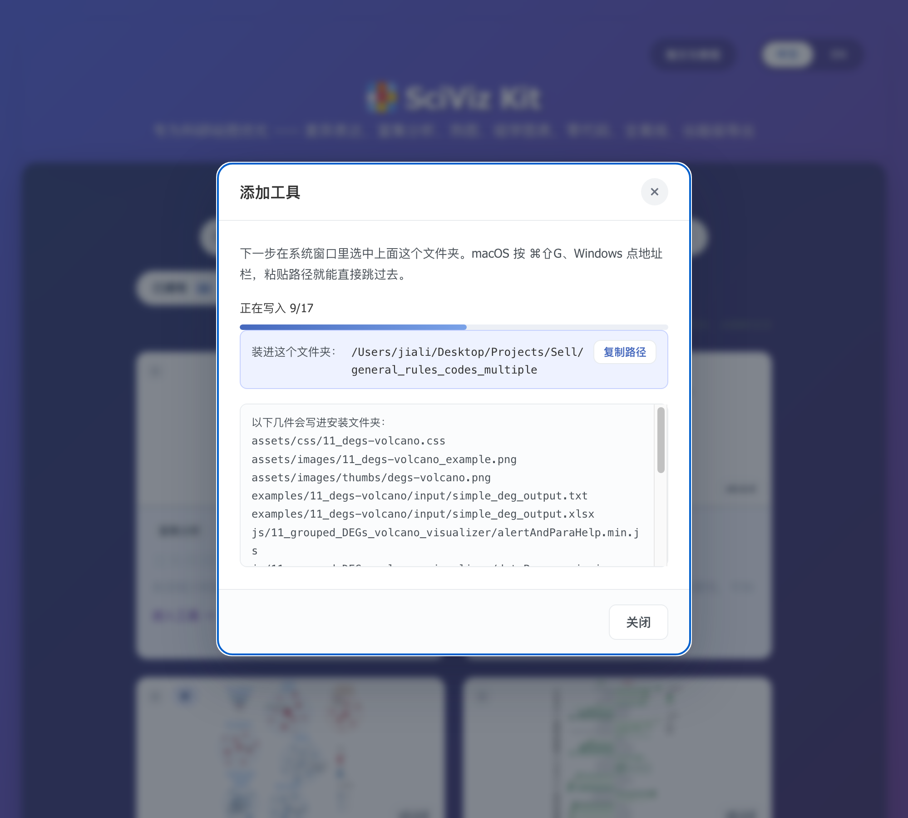

装一次，之后只管加购：SciViz 的安装与更新
拿到 zip 和 svz 不知道该先点哪个？这篇只讲一件事——第一次怎么装、以后怎么加装和更新，每一步都配实拍图。
两种包，各走一条路
你手里的文件只有两种，用在哪一步是固定的：
- 完整包
.zip：第一次安装用。它自带全部公共文件，装完就是一个能直接打开的应用。 - 加购包
.svz：之后加装第二件工具、或者给某件工具更新时用。它只含这一件工具的文件。

还有一个细节：Hub 认包看的是文件头，不是扩展名。把 .svz 改名成 .zip 也不会装错，反过来也一样。
第一次安装：解压，然后双击 index.html
下载到的完整包是一个压缩文件。先解压到你打算长期放着的位置（比如「文稿」或非系统盘），再看一眼解压出来的文件夹——它必须完整：

- 解压：不要直接在压缩包窗口里双击 index.html，那样很多文件其实还没落到磁盘上。
- 打开文件夹：进到
SciViz-11-degs-volcano/这一层。 - 双击 index.html：用 Chrome 或 Edge 打开，出现工具货架（Hub）就成功了。
两件容易踩的事：只把 index.html 拖出来单独放，页面会打开但工具跑不起来；把 js/、data/、assets/ 拆到别处，同样不行。整个文件夹一起搬走是可以的。
加装或更新：在 Hub 里点「+ 添加工具」
已经装好、正在用的那份不用动。打开你的 index.html，看货架上方的控件行：
点它会打开「添加工具」面板，里面只有一条入口：选文件。挑你刚下载的 .svz（完整包 .zip 也收）。选完之后，弹窗先把要写的东西摊开给你看：
确认无误点开始安装，进度条会跟着写盘往前推：

走完会显示「已安装」。如果货架上没立刻多出新卡，刷新一下页面即可。
更新只换这一件工具的文件。已调好的参数、配色、存下的工作都不受影响，也不需要先卸载旧版。
更快的一条路：把包直接拖进页面
如果手上不止一个包——比如「下载」文件夹里躺着这次买的、上次没装的、还有新旧两版——不用一个一个选。把它们一起拖到 Hub 页面上，松手就是安装。
- 拖文件：一个或多个
.svz/.zip都行。 - 拖文件夹：一整个文件夹拖进来，页面会把里面的包挑出来（工程文件
.scivizproj也能这样拖，见另一篇）。 - 只确认一次：多个包会合成一张清单，每个包一行，点一次「安装这 N 个包」就依次装完。
跳过的三种常见原因：同批里已经有更高版本、本机已经是这一版、或者这个包比已装的还旧。它们都会在那一行写出来，不需要你逐个比对版本号。
拖包不需要任何授权。它只是把文件读进页面；真正写盘仍然用你已经记住的那个安装文件夹，所以不会多弹一次窗口。
那一次选文件夹，一辈子只选一次
第一次点「开始安装」，系统会弹窗让你指定一个文件夹。这不是多此一举：网页没有权限自己往你的磁盘里写，必须由你亲手指一次。
- 选哪个：就是刚解压出来的那个文件夹，里面有 index.html。
- 怎么快速找到它：弹窗里已经把路径印出来了，点「复制路径」；macOS 在系统窗口按
⌘⇧G粘贴，Windows 点地址栏粘贴。 - 之后：这次选择会被记住，以后加装工具、装更新都直接写进去，不再问。
只有三种情况会再问一次：文件夹被移走或改名、你在面板里点了「换个文件夹」、或者清掉了浏览器数据。
三个常见提示，各是什么意思
| 弹窗写的 | 意思 | 该怎么办 |
|---|---|---|
| 已是最新版本，无需安装 | 你手上已经是这一版 | 不用装，直接用就行 |
| 包里是 7.0.0，低于已装的 7.2.0，已拒绝 | 这个包比你装的还旧 | 别装，留着新的那个 |
| 当前状态不允许安装该包（E-STATE） | 选的文件夹里没有 index.html | 重选，认准有 index.html 的那一个 |
| 写入失败，已回滚 | 磁盘满了，或文件被别的程序占着 | 腾出空间、关掉占用程序再试 |
看到「已回滚」不用慌：写盘是整批做的，中途失败会把改过的文件原样还原，不会留下半新半旧的版本。
三句话带走
第一次用完整包 zip：解压，双击 index.html。以后加装或更新用 svz：Hub 里点「+ 添加工具」。选目录只选一次，认准有 index.html 的那个文件夹。